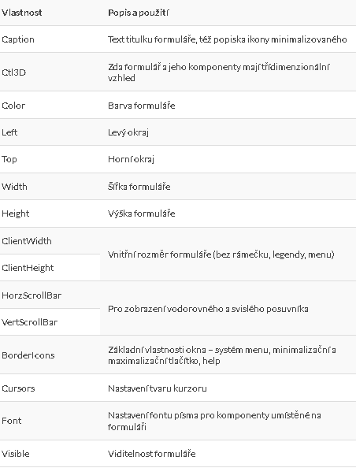
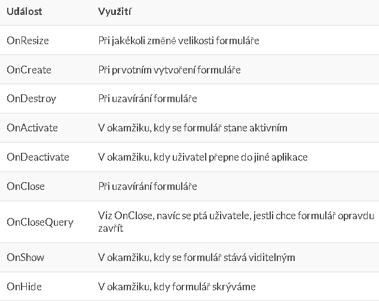

Delphi a jeho předchůdci
Delphi je vývojový prostředek pro vytváření programů pracujících
v prostředí MS Windows, který v sobě spojuje silnou sadu vizuálních
nástrojů pro tvorbu všech částí aplikace s výkonným kompilátorem a
prostředky pro vytváření databázových aplikací. Delphi je nástupcem
Turbo Borland Pascalu a Object Pascalu a je založeno na objektově
orientovaném programování a na vizuálním programování. Vizuální
programování umožňuje vytváření uživatelského rozhraní jinak než psaním
textu programu – pomocí již vytvořených komponent. Delphi obsahuje
princip dvoucestných nástrojů (two way tools), tj. vazby mezi vizuální a
textovou (programovou) tvorbou aplikace.
Prostředí Delphi
Nástrojová lišta
Standardní nástrojová lišta má tlačítka ve dvou řádcích rozložena do 4 skupin:
4 z menu FILE – open, save all, save, new
2 z menu NEW PROJECT – add file to project, remove file to project
4 z menu VIEW – view unit, view form, toggle form/unit, new form
4 z menu RUN – run, pause, trace into, step ower
Paleta komponent
Komponenty jsou základní stavební prvky každé aplikace Delphi a tvoří
tzn. visual component libraly (VCL). Paleta komponent je specializovaný
druh nástrojové lišty, který zpřístupňuje všechny komponenty z VCL.
Form designer
Zde se odehrává celý vizuální návrh aplikace. Na začátku je to
prázdná pracovní plocha s vytečkovanou mřížkou na kterou postupně
umisťujeme komponenty, propojujeme je a pracujeme s daty. Program má
vždy hlavní a někdy i sekundární formuláře.
Postup tvorby projektu
Vybereme na paletě příslušné komponenty a prdneme je na formulář
Provedeme propojení komponent a nastavení vlastností v object inspektor (properties)
Ošetříme jednotlivé události v object inspektoru (events)
Naprogramujeme zdrojový kód
Object inspector
Obsah OI se mění podle toho, která komponenta je právě aktivní. Na
počátku tedy zobrazuje parametry formuláře. Existují dva druhy parametrů
komponent a to: viditelné a neviditelné. Každá vlastnost má počáteční
hodnotu. Z programového hlediska nejsou vlastnosti nic jiného než
lokální proměnné daného objektu. Množina přípustných hodnot je určena
datovým typem.
Events – zde definujeme způsob reakce na nějaký úhon provedaný s komponentou.
Formulář
Základní komponentou Delphi je formulář, který reprezentuje
windowsovské wokno. Formulář je komponenta typu TForm. V Delphi
vytváříme základ aplikace úpravou formuláře: umístěním dalších komponent
na formulář a jejich propojením, nastavením vlastností samotného
formuláře a podřízením komponent a doprogramováním potřebných událostí.
Program má zpravidla jeden hlavní formulář a může mít i jeden nebo více
formulářů sekundárních. Hlavní formulář zpravidla zůstává viditelný po
celou dobu běhu aplikace, sekundární se zobrazují a zase mizí za chodu.
Formulář stejně jako každá jiná komponenta má své vlastnosti a události.
Vlastnosti

Událost
Využití

Program
Model vývoje programů v Delphi
otevření nového projektu
Návrh formuláře – umístění komponent a nastavení paramentrů nebo vlastností v objekt inspektoru
Dopsání kódu
Kompilace
Vyzkoušení (ladění a testování)
Uložení projektu
menu File – Save project
Pro jména souborů obvykle využíváme jméno formuláře:
zdrojový kód – soubor_f.pas
projekt: jméno.dpr